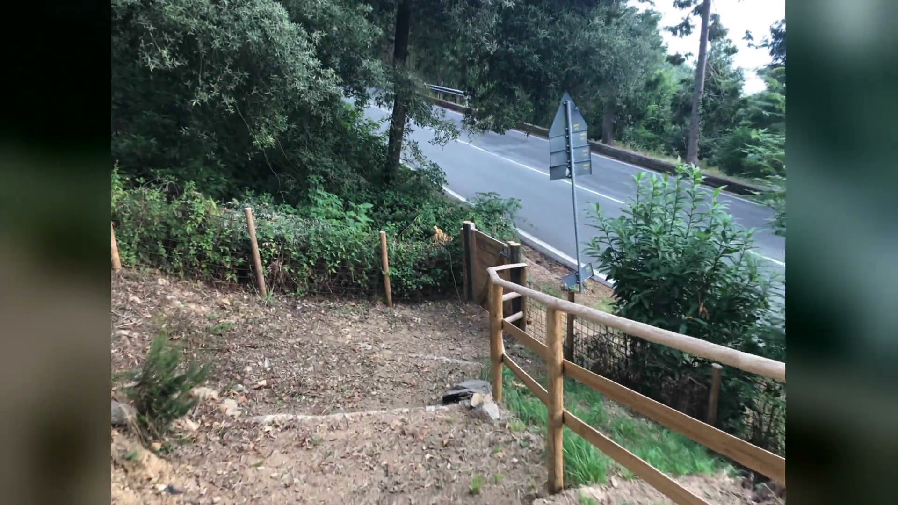
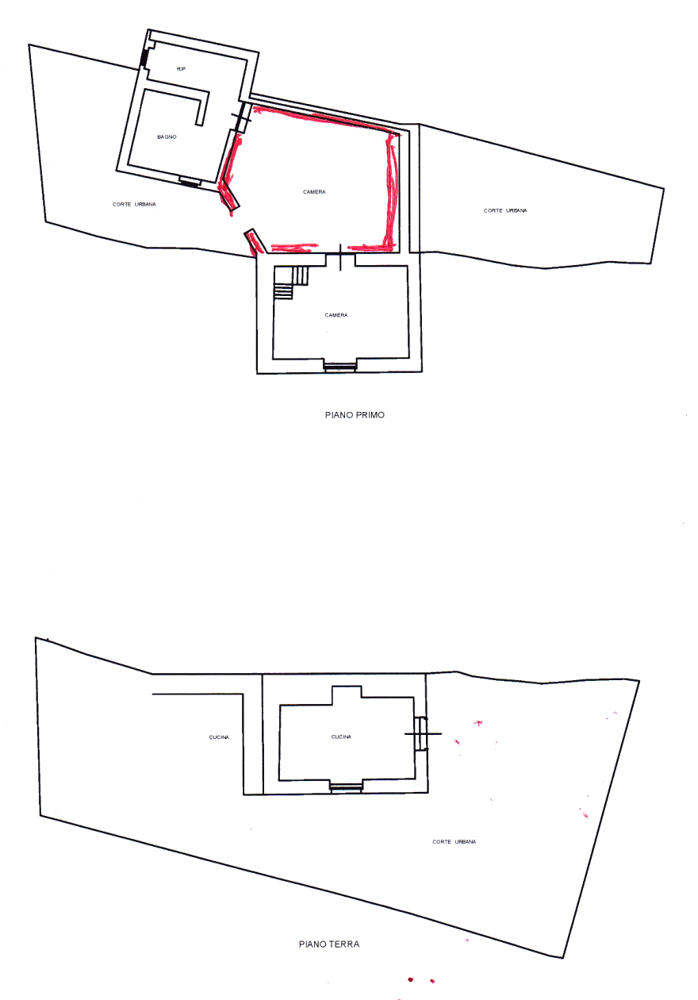
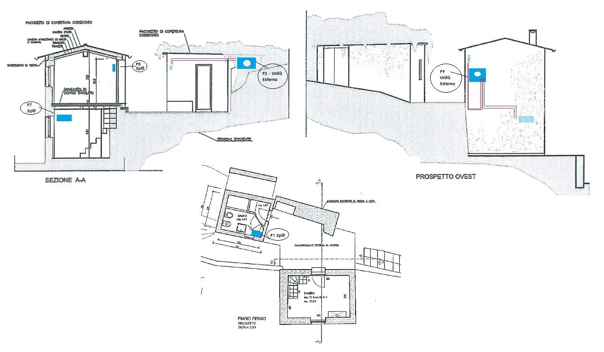
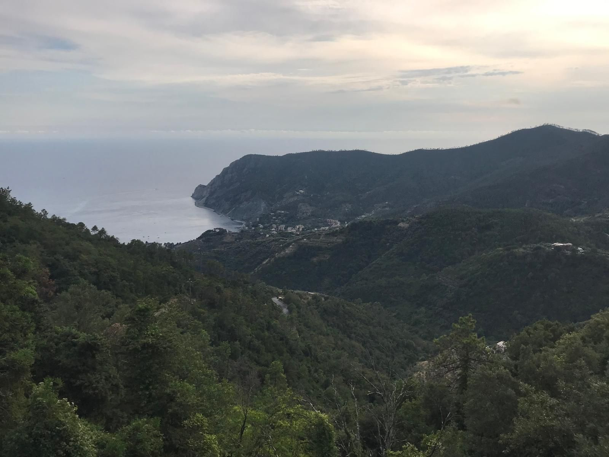

Monterosso al Mare · Cinque Terre
Rustico-Ensemble hoch über Monterosso
Zwei kleine, komplett sanierte Steinhäuser mit Blick auf die Bucht. Parkplatz direkt am Haus, 11 Minuten zum Strand.
Ankommen und Urlaub genießen
Hoch über Monterosso liegt dieses komplett sanierte Rustico aus zwei kleinen Häusern, mit fantastischem Blick auf die Bucht von Monterosso.
Absolute Alleinlage oberhalb eines ehemaligen Klosters, heute Restaurant und Hotel.
In den zwei Häusern erwarten Sie auf ca. 50 m² Wohnfläche zwei Zimmer und ein Bad, dazu eine offene, voll ausgestattete, hochwertige Küche mit Sitzplatz unter einer wetterschützenden Pergola.
Das hochwertige Mobiliar und die professionelle Außenküche sind im Kaufpreis enthalten. In Südlage mit unverbaubarem Blick auf die Bucht.
- ca. 50 m²
- Wohnfläche
- ca. 850 m²
- Hanggrundstück in Südlage
- 2 Häuser
- Haupthaus und Badhaus
- 2 Zimmer
- Wohnraum und Schlafzimmer
- 1 Bad
- mit Fenster, Dusche und Waschmaschine
- Außenküche
- Profiküche unter der Pergola
- Gästehaus
- kleines Holzhaus
- Klimaanlage
- in jedem Raum, Wärmepumpe
- Möbliert
- Mobiliar im Preis enthalten
- Parkplatz
- direkt am Haus
Grundriss
Erdgeschoss mit Küche und Außenküche, Obergeschoss mit Zimmer, Bad und WC. Rot markiert: der neue Verbindungsraum zwischen den Häusern.
Grundriss als PDF öffnen ↗Ausstattung
- Hochwertiges Mobiliar inklusive
- Profi-Außenküche mit Herd, Kühlschrank und Arbeitsflächen
- Neue Fenster und Fensterläden aus Holz
- Klimaanlage in jedem Raum
- Bad mit Fenster, Dusche und Waschmaschine
- Natursteinplatten an Zugang und Vorplatz
- Abstellraum im Holzhaus
- Satellitenanschluss
- Städtisches Wasser und eigene Quelle, Strom


Ein Rundgang in Bildern
Alle Fotos zeigen das Haus, wie es ist.
Lage
Oberhalb von Monterosso im Ortsteil Soviore, beim ehemaligen Kloster Nostra Signora di Soviore. Ruhig im Grünen, und doch schnell am Meer.
Lage in Google Maps öffnen ↗- 11 Min.mit dem Auto zum Strand von Monterosso
- ca. 5 kmbis in den Ort, im Sommer mit Shuttlebus
- SträndeMonterosso und Levanto
- ca. 100 kmzu den Flughäfen Pisa und Genua

Die Nachbarschaft
Wenige Schritte entfernt liegt das Santuario Nostra Signora di Soviore, einer der ältesten Wallfahrtsorte Liguriens, mit Hotel und Restaurant.
Kaufen in Italien, mit Unterstützung
Wir unterstützen Sie umfänglich beim Kauf in Italien.
- 1
Besichtigung
Wir zeigen Ihnen das Haus vor Ort.
- 2
Unterlagen
Wir stellen alle nötigen Unterlagen für Sie zusammen.
- 3
Notar
Der Kauf wird bei einem italienischen Notar beurkundet.
- 4
Schlüssel
Übergabe, ankommen und Urlaub genießen.
Anfrage senden
Schreiben Sie uns. Wir antworten schnell und persönlich.